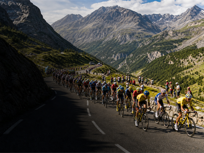

Sports - places, calendar, context
Cycling
Cycling brings together places, calendar moments and travel stories in one compact OneSlider view.
Grand Tours3
Giro, Tour and Vuelta define road cycling seasons.
Modern rootsOrganized play
Clubs, rules and federations turned local games into shared competitions.
Signature formatClear rules
Fixed formats make seasons and finals easy to follow.
Calendar rhythmAnnual anchors
Major events create repeatable travel and broadcast moments.
How Cycling became global
OriginsLocal play and regional clubs create recognizable traditions.
RulesShared rules make competition comparable across borders.
International stageWorld cups, tours and championships connect athletes with audiences.
Media eraBroadcast and sponsorship turn events into global reference points.
Modern calendarThe sport now shapes travel plans and city identity.
What defines Cycling
Format
FormatHow the topic is structured and where pressure builds.Place
PlaceThe venues, landscapes or cities that change the story.People
PeopleTeams, artists, makers or communities that give it a pulse.Moment
MomentThe decisive starts, finishes, ceremonies or showcase days.OneSliders context notes for planning and discovery.
Upcoming events
 Giro d Italia
Giro d ItaliaMilan, Italy
 Vuelta a Espana
Vuelta a EspanaBarcelona, Spain
 Paris Roubaix
Paris RoubaixParis, France
 Tour of Flanders
Tour of FlandersBrussels, Belgium
 UCI Road World Championships
UCI Road World ChampionshipsToronto, Canada
 Milan San Remo
Milan San RemoMilan, Italy
 Liege Bastogne Liege
Liege Bastogne LiegeBrussels, Belgium
 Strade Bianche
Strade BiancheMilan, Italy
 Amstel Gold Race
Amstel Gold RaceAmsterdam, Netherlands

Tour de France26 Jul 2026